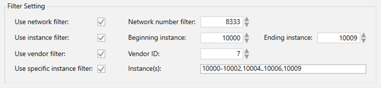

Configure Discovery Settings
- Click the Discovery Settings expander.
- In the General Setting section, specify the Scan timeout in seconds if you want to change the default setting. This setting determines the amount of time a network scan runs before it stops.
- In the Auto-discovery Setting section, check the Enable auto-discovery for devices check box if you want to automatically scan for new devices on the network.
- In the Filter Setting section, select one or more of the following settings:
- To enable the discovery of all the devices on one network, select the Use network filter option. Then, enter the network number in the Network number filter field.
- To enable the discovery of all the devices within a range, select the Use instance Filter option. Then, enter your range of numbers in the Beginning instance and Ending instance fields.
- To enable the discovery of all the devices on the network from one vendor, select the Use vendor filter option. Then, enter the vendor ID number in the Vendor ID field.
- To enable the discovery of devices for multiple instance ranges, select the Use specific instance filter. Then, enter the instance ranges you want to discover in the Instance(s) field.

- Click Save
 .
.